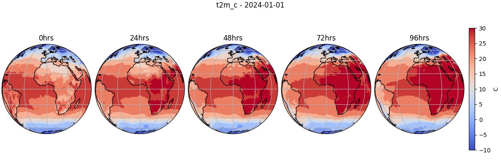

Note
Go to the end to download the full example code.
Extending Diagnostic Models#
Implementing a custom diagnostic model
This example will demonstrate how to extend Earth2Studio by implementing a custom diagnostic model and running it in a general workflow.
In this example you will learn:
API requirements of diagnostic models
Implementing a custom diagnostic model
Running this custom model in a workflow with built in prognostic
# /// script
# dependencies = [
# "earth2studio[dlwp] @ git+https://github.com/NVIDIA/earth2studio.git",
# "cartopy",
# ]
# ///
Custom Diagnostic#
As discussed in the Diagnostic Models section of the user guide,
Earth2Studio defines a diagnostic model through a simple interface
earth2studio.models.dx.base.Diagnostic Model. This can be used to help
guide the required APIs needed to successfully create our own model.
In this example, lets consider a simple diagnostic that converts the surface temperature in Kelvin to Celsius to make it more readable for the average person.
Our diagnostic model has a base class of torch.nn.Module which allows us
to get the required to(device) method for free.
import os
os.makedirs("outputs", exist_ok=True)
from dotenv import load_dotenv
load_dotenv() # TODO: make common example prep function
from collections import OrderedDict
import numpy as np
import torch
from earth2studio.models.batch import batch_coords, batch_func
from earth2studio.utils import handshake_coords, handshake_dim
from earth2studio.utils.type import CoordSystem
class CustomDiagnostic(torch.nn.Module):
"""Custom dianostic model"""
def __init__(self):
super().__init__()
def input_coords(self) -> CoordSystem:
"""Input coordinate system of the prognostic model
Returns
-------
CoordSystem
Coordinate system dictionary
"""
return OrderedDict(
{
"batch": np.empty(0),
"variable": np.array(["t2m"]),
"lat": np.linspace(90, -90, 721),
"lon": np.linspace(0, 360, 1440, endpoint=False),
}
)
@batch_coords()
def output_coords(self, input_coords: CoordSystem) -> CoordSystem:
"""Output coordinate system of the prognostic model
Parameters
----------
input_coords : CoordSystem
Input coordinate system to transform into output_coords
Returns
-------
CoordSystem
Coordinate system dictionary
"""
# Check input coordinates are valid
target_input_coords = self.input_coords()
for i, (key, value) in enumerate(target_input_coords.items()):
if key != "batch":
handshake_dim(input_coords, key, i)
handshake_coords(input_coords, target_input_coords, key)
output_coords = OrderedDict(
{
"batch": np.empty(0),
"variable": np.array(["t2m_c"]),
"lat": np.linspace(90, -90, 721),
"lon": np.linspace(0, 360, 1440, endpoint=False),
}
)
output_coords["batch"] = input_coords["batch"]
return output_coords
@batch_func()
def __call__(
self,
x: torch.Tensor,
coords: CoordSystem,
) -> tuple[torch.Tensor, CoordSystem]:
"""Runs diagnostic model
Parameters
----------
x : torch.Tensor
Input tensor
coords : CoordSystem
Input coordinate system
"""
out_coords = self.output_coords(coords)
out = x - 273.15 # To celcius
return out, out_coords
Input/Output Coordinates#
Defining the input/output coordinate systems is essential for any model in
Earth2Studio since this is how both the package and users can learn what type of data
the model expects. This requires the definition of input_coords() and
output_coords(). Have a look at Coordinate Systems for details on
coordinate system.
For this diagnostic model, we simply define the input coordinates
to be the global surface temperature specified in earth2studio.lexicon.base.py.
The output is a custom variable t2m_c that represents the temperature in
Celsius.
__call__() API#
The call function is the main API of diagnostic models that have a tensor and coordinate system as input/output. This function first validates that the coordinate system is correct. Then both the input data tensor and also coordinate system are updated and returned.
Note
You may notice the batch_func() decorator, which is used to make batched
operations easier. For more details about this refer to the Batch Dimension
section of the user guide.
Set Up#
With the custom diagnostic model defined, the next step is to set up and run a
workflow. We will use the built in workflow earth2studio.run.diagnostic().
Lets instantiate the components needed.
Prognostic Model: Use the built in DLWP model
earth2studio.models.px.DLWP.Diagnostic Model: The custom diagnostic model defined above
Datasource: Pull data from the GFS data api
earth2studio.data.GFS.IO Backend: Save the outputs into a Zarr store
earth2studio.io.ZarrBackend.
from dotenv import load_dotenv
load_dotenv() # TODO: make common example prep function
from earth2studio.data import GFS
from earth2studio.io import ZarrBackend
from earth2studio.models.px import DLWP
# Load the default model package which downloads the check point from NGC
package = DLWP.load_default_package()
model = DLWP.load_model(package)
# Diagnostic model
diagnostic = CustomDiagnostic()
# Create the data source
data = GFS()
# Create the IO handler, store in memory
io = ZarrBackend()
Execute the Workflow#
Running our workflow with a build in prognostic model and a custom diagnostic is the same as running a built in diagnostic.
import earth2studio.run as run
nsteps = 20
io = run.diagnostic(["2024-01-01"], nsteps, model, diagnostic, data, io)
print(io.root.tree())
2026-03-23 21:02:57.142 | INFO | earth2studio.run:diagnostic:198 - Running diagnostic workflow!
2026-03-23 21:02:57.142 | INFO | earth2studio.run:diagnostic:205 - Inference device: cuda
Fetching GFS data: 0%| | 0/7 [00:00<?, ?it/s]
2026-03-23 21:02:57.216 | DEBUG | earth2studio.data.gfs:fetch_array:386 - Fetching GFS grib file: noaa-gfs-bdp-pds/gfs.20231231/18/atmos/gfs.t18z.pgrb2.0p25.f000 208052937-721817
Fetching GFS data: 0%| | 0/7 [00:00<?, ?it/s]
2026-03-23 21:02:57.229 | DEBUG | earth2studio.data.gfs:fetch_array:386 - Fetching GFS grib file: noaa-gfs-bdp-pds/gfs.20231231/18/atmos/gfs.t18z.pgrb2.0p25.f000 294691465-856457
Fetching GFS data: 0%| | 0/7 [00:00<?, ?it/s]
2026-03-23 21:02:57.241 | DEBUG | earth2studio.data.gfs:fetch_array:386 - Fetching GFS grib file: noaa-gfs-bdp-pds/gfs.20231231/18/atmos/gfs.t18z.pgrb2.0p25.f000 251230645-803982
Fetching GFS data: 0%| | 0/7 [00:00<?, ?it/s]
2026-03-23 21:02:57.252 | DEBUG | earth2studio.data.gfs:fetch_array:386 - Fetching GFS grib file: noaa-gfs-bdp-pds/gfs.20231231/18/atmos/gfs.t18z.pgrb2.0p25.f000 397402829-996456
Fetching GFS data: 0%| | 0/7 [00:00<?, ?it/s]
2026-03-23 21:02:57.264 | DEBUG | earth2studio.data.gfs:fetch_array:386 - Fetching GFS grib file: noaa-gfs-bdp-pds/gfs.20231231/18/atmos/gfs.t18z.pgrb2.0p25.f000 420029701-1181204
Fetching GFS data: 0%| | 0/7 [00:00<?, ?it/s]
2026-03-23 21:02:57.275 | DEBUG | earth2studio.data.gfs:fetch_array:386 - Fetching GFS grib file: noaa-gfs-bdp-pds/gfs.20231231/18/atmos/gfs.t18z.pgrb2.0p25.f000 329116923-847018
Fetching GFS data: 0%| | 0/7 [00:00<?, ?it/s]
2026-03-23 21:02:57.287 | DEBUG | earth2studio.data.gfs:fetch_array:386 - Fetching GFS grib file: noaa-gfs-bdp-pds/gfs.20231231/18/atmos/gfs.t18z.pgrb2.0p25.f000 408062467-879185
Fetching GFS data: 0%| | 0/7 [00:00<?, ?it/s]
Fetching GFS data: 100%|██████████| 7/7 [00:00<00:00, 85.65it/s]
Fetching GFS data: 0%| | 0/7 [00:00<?, ?it/s]
2026-03-23 21:02:57.356 | DEBUG | earth2studio.data.gfs:fetch_array:386 - Fetching GFS grib file: noaa-gfs-bdp-pds/gfs.20240101/00/atmos/gfs.t00z.pgrb2.0p25.f000 246334297-805355
Fetching GFS data: 0%| | 0/7 [00:00<?, ?it/s]
2026-03-23 21:02:57.368 | DEBUG | earth2studio.data.gfs:fetch_array:386 - Fetching GFS grib file: noaa-gfs-bdp-pds/gfs.20240101/00/atmos/gfs.t00z.pgrb2.0p25.f000 391722290-987401
Fetching GFS data: 0%| | 0/7 [00:00<?, ?it/s]
2026-03-23 21:02:57.380 | DEBUG | earth2studio.data.gfs:fetch_array:386 - Fetching GFS grib file: noaa-gfs-bdp-pds/gfs.20240101/00/atmos/gfs.t00z.pgrb2.0p25.f000 323956279-837771
Fetching GFS data: 0%| | 0/7 [00:00<?, ?it/s]
2026-03-23 21:02:57.391 | DEBUG | earth2studio.data.gfs:fetch_array:386 - Fetching GFS grib file: noaa-gfs-bdp-pds/gfs.20240101/00/atmos/gfs.t00z.pgrb2.0p25.f000 289307267-851916
Fetching GFS data: 0%| | 0/7 [00:00<?, ?it/s]
2026-03-23 21:02:57.403 | DEBUG | earth2studio.data.gfs:fetch_array:386 - Fetching GFS grib file: noaa-gfs-bdp-pds/gfs.20240101/00/atmos/gfs.t00z.pgrb2.0p25.f000 402321768-876246
Fetching GFS data: 0%| | 0/7 [00:00<?, ?it/s]
2026-03-23 21:02:57.414 | DEBUG | earth2studio.data.gfs:fetch_array:386 - Fetching GFS grib file: noaa-gfs-bdp-pds/gfs.20240101/00/atmos/gfs.t00z.pgrb2.0p25.f000 414179964-1179422
Fetching GFS data: 0%| | 0/7 [00:00<?, ?it/s]
2026-03-23 21:02:57.425 | DEBUG | earth2studio.data.gfs:fetch_array:386 - Fetching GFS grib file: noaa-gfs-bdp-pds/gfs.20240101/00/atmos/gfs.t00z.pgrb2.0p25.f000 204118947-720169
Fetching GFS data: 0%| | 0/7 [00:00<?, ?it/s]
Fetching GFS data: 100%|██████████| 7/7 [00:00<00:00, 86.55it/s]
2026-03-23 21:02:57.456 | SUCCESS | earth2studio.run:diagnostic:228 - Fetched data from GFS
2026-03-23 21:02:57.467 | INFO | earth2studio.run:diagnostic:260 - Inference starting!
Running inference: 0%| | 0/21 [00:00<?, ?it/s]
Running inference: 14%|█▍ | 3/21 [00:00<00:00, 25.12it/s]
Running inference: 29%|██▊ | 6/21 [00:00<00:00, 23.91it/s]
Running inference: 43%|████▎ | 9/21 [00:00<00:00, 25.29it/s]
Running inference: 57%|█████▋ | 12/21 [00:00<00:00, 25.27it/s]
Running inference: 71%|███████▏ | 15/21 [00:00<00:00, 26.72it/s]
Running inference: 86%|████████▌ | 18/21 [00:00<00:00, 26.86it/s]
Running inference: 100%|██████████| 21/21 [00:00<00:00, 27.52it/s]
Running inference: 100%|██████████| 21/21 [00:00<00:00, 26.46it/s]
2026-03-23 21:02:58.261 | SUCCESS | earth2studio.run:diagnostic:276 -
Inference complete
/
├── lat (721,) float64
├── lead_time (21,) timedelta64
├── lon (1440,) float64
├── t2m_c (1, 21, 721, 1440) float32
└── time (1,) datetime64
Post Processing#
Let’s plot the Celsius temperature field from our custom diagnostic model.
import cartopy.crs as ccrs
import matplotlib.pyplot as plt
forecast = "2024-01-01"
variable = "t2m_c"
plt.close("all")
# Create a figure and axes with the specified projection
fig, ax = plt.subplots(
1,
5,
figsize=(12, 4),
subplot_kw={"projection": ccrs.Orthographic()},
constrained_layout=True,
)
times = (
io["lead_time"][:].astype("timedelta64[ns]").astype("timedelta64[h]").astype(int)
)
step = 4 # 24hrs
for i, t in enumerate(range(0, 20, step)):
ctr = ax[i].contourf(
io["lon"][:],
io["lat"][:],
io[variable][0, t],
vmin=-10,
vmax=30,
transform=ccrs.PlateCarree(),
levels=20,
cmap="coolwarm",
)
ax[i].set_title(f"{times[t]}hrs")
ax[i].coastlines()
ax[i].gridlines()
plt.suptitle(f"{variable} - {forecast}")
cbar = plt.cm.ScalarMappable(cmap="coolwarm")
cbar.set_array(io[variable][0, 0])
cbar.set_clim(-10.0, 30)
cbar = fig.colorbar(cbar, ax=ax[-1], orientation="vertical", label="C", shrink=0.8)
plt.savefig("outputs/02_custom_diagnostic_dlwp_prediction.jpg")

Total running time of the script: (0 minutes 34.964 seconds)